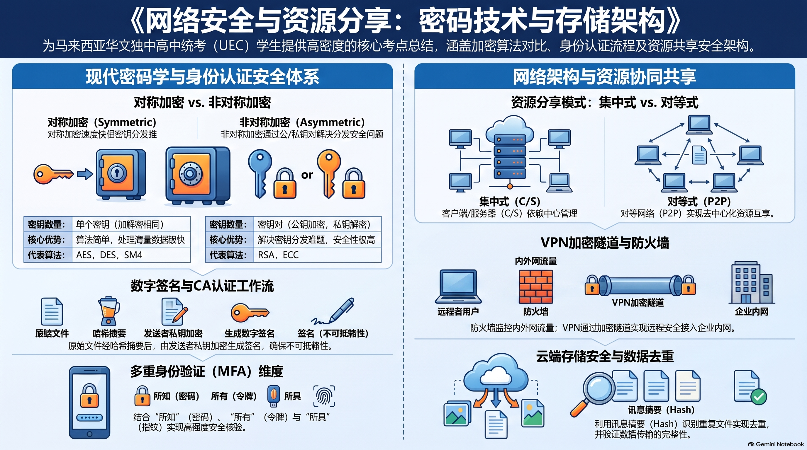

📊 本章全景思维导图与核心考点信息图
本图系统整合了董总《高中资讯科技（第二册）》第 4 章全部核心考点，涵盖网络安全 CIA 三要素、对称与非对称密码学体系、生日攻击机理、VPN 与异地容灾预案、个人隐私 12 项法则与网络伦理法律合规，支持点击全屏高清缩放复习。


🎯 本章学习目标与核心考点清单
适用对象：马来西亚华文独立中学（董总新课标）高一/高二师生
教材基准：董总教科书《高中资讯科技（第二册）》（2024 年版）第 4 章“网络安全与网络资源分享”与官方参考答案
核心素养：信息安全防御意识、密码学安全架构思维、容灾连续性规划与数字时代公民法律伦理合规素养

🖼️ 【全景幻灯 01 导读】全章知识架构与核心素养：全面贯通 4.1 网络威胁与安全技术、4.2 网络资源分享与伦理合规两大核心板块。
1.1 核心考查三维目标
- 识记（Knowing）：熟记网络安全 CIA 三要素（机密性、完整性、可用性）定义；掌握勒索病毒（Ransomware）典型加密绑架破坏特征；熟记保护个人数据的 12 项实操黄金守则；熟记 9 类不正当使用网络资源行为；掌握对称加密与非对称加密公私钥分配体系。
- 理解（Understanding）：透彻理解生日悖论（Birthday Paradox）及其在哈希碰撞（Hash Collision）生日攻击中的破坏机理；领会数字签名确保完整性与防抵赖的逻辑链路；掌握热备服务器与异地备援（Off-site Mirroring）在抵御勒索病毒与物理灾难中的核心工程价值；理解外网设备为何必须严格关闭资源共享属性。
- 综合应用（Synthesizing）：能针对企业员工误点钓鱼邮件感染勒索病毒的具体安全事件案例，准确诊断员工操作失误，并能为企业设计涵盖“网络隔离 + 本地双机热备 + 异地只读脱机冷备 + 应急响应预案”的综合安全防御方案。
1.2 核心考点通关背诵清单 (Checklist)
提示：点击每项考点左侧复选框，可标记自己的第一轮通关复习进度：
🛡️ 二、 4.1 网络威胁与 CIA 三要素

🖼️ 【全景幻灯 02 导读】网络安全 CIA 三要素深度解析：机密性 (Confidentiality)、完整性 (Integrity) 与可用性 (Availability) 核心定义及破坏场景剖析。
(1) 网络安全基石：CIA 三要素模型
| 核心要素 | 权威定义与目标 | 典型攻击与破坏场景 | 核心工程防范技术 |
|---|---|---|---|
| 机密性 (Confidentiality) |
确保敏感数据信息仅能被经授权的合法实体访问和查阅，严禁泄露给未授权第三方。 | 黑客截获网络明文报文、窃听 Wi-Fi 数据流、内部员工盗取商业机密数据库。 | 高强度数据加密（AES/RSA）、访问控制权限列表（ACL）、VPN 加密隧道。 |
| 完整性 (Integrity) |
确保信息在传输、处理与存储全生命周期中未经未授权实体的篡改、伪造、插入或删除，保持数据的绝对真实。 | 中间人攻击篡改网银转账账号、黑客恶意修改考试成绩数据库、伪造公文指令。 | 消息摘要（SHA-256）、数字签名（Digital Signature）、区块链分布式共识校验。 |
| 可用性 (Availability) |
确保经授权的合法用户在需要使用数据和网络服务时，能够及时、稳定、不受阻碍地获取并正常使用。 | DDoS 分布式拒绝服务攻击打瘫网站、勒索病毒加密锁死服务器系统、机房断电宕机。 | 负载均衡、抗 DDoS 防火墙、主备双机热备、UPS 不间断电源、异地灾难备份。 |
(2) 典型网络威胁形态深度对比

🖼️ 【全景幻灯 03 导读】典型网络威胁剖析：病毒、木马、勒索与钓鱼：恶意代码传染性与寄生宿主对比、木马伪装后门、勒索软件公私钥绑架与社会工程钓鱼欺诈。
| 威胁类别 | 核心感染机制与传播特征 | 典型破坏后果 | 工程防护关键 |
|---|---|---|---|
| 计算机病毒 (Virus) |
具有宿主寄生性与传染性，通常依附在正常可执行文件（.exe）或宏代码中，用户运行受感染程序时激活并感染其他文件。 | 破坏、篡改或格式化硬盘文件，消耗系统资源致死机。 | 安装正版防病毒软件，定期更新病毒库，不运行来源不明的可执行程序。 |
| 特洛伊木马 (Trojan Horse) |
不具备自我繁殖性，依靠“伪装成无害实用软件”（如游戏外挂、破解补丁）诱骗用户自行下载运行，暗中在系统开启监听后门。 | 向远程黑客开放控制权，盗取账号密码、开启摄像头窃听、沦为肉鸡发起 DDoS。 | 仅从官方正规渠道下载软件，启用防火墙监控异常外联端口。 |
| 勒索软件 (Ransomware) |
通过钓鱼邮件附件或远程桌面（RDP）漏洞入侵，采用高强度非对称/对称混合加密算法悄无声息锁死主机所有核心文档，勒索比特币赎金。 | 企业核心数据库被锁死、业务系统全线瘫痪；即使支付赎金黑客也往往撕票不予解密。 | 冷热分离异地备份（3-2-1 原则）、杜绝点击陌生邮件附件、关闭非必要危险端口（如 3389/445）。 |
| 钓鱼欺诈 (Phishing) |
属于典型的社会工程学攻击（Social Engineering）。伪装成银行、税务局、学校官方名义发送紧急伪造邮件，诱骗受害者进入钓鱼伪造网页输入账号密码。 | 个人银行存款被盗刷、企业域账号被黑客渗透攻破。 | 仔细甄别发件人域名后缀拼写（如 paypa1.com 冒充 paypal.com）、强制开启多因素认证 (MFA)。 |
🔑 三、 对称/非对称加密与数字签名
(1) 密码学双雄：对称加密 vs 非对称加密体系

🖼️ 【全景幻灯 04 导读】密码学基石：对称加密 vs 非对称加密体系：加解密同钥速度极快 (AES/DES) vs 公钥加密私钥解密解决密钥分发难题 (RSA) 的全面对比矩阵。
| 比较维度 | 对称加密算法 (Symmetric Encryption) | 非对称加密算法 (Asymmetric Encryption) |
|---|---|---|
| 密钥分配原则 | 加解密使用同一把秘密密钥（Secret Key），通信双方必须提前共享这把钥匙并严格保密。 | 使用配对的“公钥（Public Key）”与“私钥（Private Key）”：公钥公开发布给任何人，私钥由所有者本人绝对私密保管。 |
| 计算性能与开销 | 算法运算复杂度低，加解密速度极快，系统计算资源消耗小。 | 基于大数质因数分解或离散对数等复杂数学难题，计算开销极大，加解密速度较慢（慢百倍千倍）。 |
| 核心痛点与短板 | 密钥分发与管理困境：若在不安全的网络上传输密钥极易被截获；$N$ 个用户两两通信需要管理 $N(N-1)/2$ 把密钥。 | 计算速度缓慢，不适合直接用于加密海量大型多媒体数据流。 |
| 代表算法 | AES (高级加密标准)、DES、3DES | RSA、ECC (椭圆曲线加密) |
| 工业混合应用 | 现代 HTTPS/SSL 混合加密范式：握手协商阶段使用非对称加密（RSA）安全传输一个临时对称会话密钥（解决密钥分发难题）；后续海量网页数据传输全面切换为对称加密（AES）进行高速加解密。 | |
(2) 消息摘要、数字签名与 CA 证书信任链

🖼️ 【全景幻灯 05 导读】消息摘要、数字签名与 CA 数字证书信任链：单向散列哈希防篡改、发方私钥签名防抵赖、CA 机构颁发公钥证书构建全球信任链。
1. 消息摘要 (Message Digest / Hash)
- 单向不可逆性：任何长度的明文输入，经过 SHA-256 计算输出固定 256 位哈希值；绝对无法从哈希值反推倒算回原始明文；
- 雪崩效应（防篡改）：原始数据哪怕仅改动一个标点符号，计算出的摘要哈希值也会发生翻天覆地的剧变。
2. 数字签名 (Digital Signature)
- 发送方私钥签名：发信人先用哈希函数提炼消息摘要，再用自己的私钥对摘要进行加密，作为“数字签名”随文档一并发出；
- 接收方公钥验签：接收方用发信人的公钥解密签名得到摘要 A，同时对收到正文计算摘要 B。若 A == B，则100% 确认文档未被篡改且确由发信人所发（防抵赖与身份鉴权）。
🎲 四、 生日攻击与哈希抗碰撞性

🖼️ 【全景幻灯 06 导读】高阶密码学安全：生日攻击与哈希抗碰撞性：以 23 人班级生日相同概率超 50% 形象引出哈希碰撞截断风险与安全位长选择。
(1) 生日悖论（Birthday Paradox）的数学真理
一年共有 365 天，直觉上大多数人认为需要至少 183 人（一半以上天数）才可能让两人同一天生日。然而数学概率论给出了令人震惊的结论：在一个仅有 23 人的班级里，存在至少两个人同一天生日的概率就已超过 50.7%！当人数达到 50 人时，这一概率飙升至 97%！
(2) 生日攻击在密码学中的致命破坏力
黑客利用生日悖论原理对哈希算法发起的攻击被称为生日攻击（Birthday Attack）：
- 攻击机理：黑客并不试图去破解某份具体特定合同的哈希值，而是同时随机生成大量合法的良性合同变体与恶意的阴阳欺诈合同变体。利用生日悖论，只需生成约 $2^{n/2}$ 个变体样本，就能以极高概率找到一对具有完全相同哈希值的“良性合同”与“欺诈合同”（哈希碰撞 Hash Collision）！
- 伪造诈骗：黑客让公司高管对良性合同执行合法数字签名，然后将该签名偷梁换柱贴到具有相同哈希值的欺诈合同上，由于两者的消息摘要完全一致，接收方验证公钥签名时系统将误判其完全合法！
- 工程防范唯一之道：大幅提升哈希函数的消息摘要比特长度（全面废弃淘汰已被攻破的 MD5 128位 和 SHA-1 160位算法，强制升级为 SHA-256 或 SHA-512），使 $2^{n/2} = 2^{128}$ 成为远超宇宙恒星总数的计算不可能天文数字。
🏢 五、 VPN隧道与企业热备容灾预案
(1) 虚拟专用网 (VPN) 隧道加密技术

🖼️ 【全景幻灯 07 导读】虚拟专用网 (VPN) 隧道加密与安全远程接入：在公用不可信互联网上建立端到端加密隧道技术，保障居家办公远程连接内网安全。
虚拟专用网络（Virtual Private Network, VPN） 是一种在不可信任的公共广域网（Internet）之上，通过对数据包进行二次封装与高强对称加密（如 IPsec / OpenVPN），建立起一条逻辑上的专用虚拟安全通道的技术。
- 远程居家办公安全接入：员工居家时拨入公司 VPN 网关，公网中的黑客与电信运营商即使嗅探抓包，看到的也只是一堆被密文封装的随机乱码；
- 跨城市多分支机构专线平替：免除跨州租用数万令吉昂贵物理物理裸光缆的负担，用经济实惠的普通商业宽带+VPN隧道构建企业虚拟内网。
(2) 企业级抗灾中枢：热备服务器与异地容灾预案

🖼️ 【全景幻灯 08 导读】企业级抗灾中枢：热备服务器与异地容灾预案**：主备双机热备自动毫秒切换、异地多活数据容灾与企业业务连续性保障方案。
| 容灾防御支柱 | 技术实现机制 | 防范的典型灾难场景 | 关键业务效益 (RTO / RPO) |
|---|---|---|---|
| 主备双机热备 (Hot Standby Cluster) |
备用服务器保持开机并与主服务器建立心跳线监听，数据实时同步；一旦主服务器硬件故障断电，备用机在几秒内自动顶替上线接管流量。 | 主机 CPU 烧毁、主板短路、单台服务器崩溃。 | 业务几乎零停摆，对外访问无感知（恢复时间目标 RTO 接近于 0）。 |
| 异地脱机备援 (Off-site Cold/Air-gapped) |
数据定期打包加密后，跨地理区域传输至异地独立机房，或拷贝至移动硬盘脱机存入银行保险库（物理隔离）。 | 整个机房火灾水浸、大规模勒索病毒横向感染感染全部内网在线主机。 | 哪怕全公司在线设备全部被勒索锁死，依然保有不可篡改的最终完整备份底牌。 |
| 灾难恢复应急预案 (Disaster Recovery Plan) |
编写详尽的应急处置 SOP 文档，明确各级网管人员责任分工，每半年组织一次无预警全网模拟断网演练。 | 突发重大安全事件时员工慌乱手忙脚乱，错失止损黄金窗口期。 | 保障在遭受致命打击后，系统能在最短合规时间内有条不紊精准复原。 |
🔒 六、 4.2 个人隐私保护与合规伦理
(1) 保护个人数字隐私与数据的十二大黄金守则（课本精萃）

🖼️ 【全景幻灯 09 导读】保护个人数字隐私与数据的十二大黄金守则：禁用弱口令、开启多因素认证 (MFA)、防范假冒公共 Wi-Fi 与定期更新软件补丁。
- 强制启用多因素身份验证（MFA / 2FA）：除常规密码外，绑定短信验证码、手机身份验证器或指纹面部识别；
- 摒弃弱口令与“一密通用”恶习：使用高强度密码（大小写字母+数字+特殊符号超12位），各网站密码独立，借助密码管理器保管；
- 直连公共外网的设备坚决关闭“文件与网络共享”功能，严禁将未受控端口暴露在公网；
- 警惕公共无密码 Wi-Fi 钓鱼热点：外出绝不在免密公共 Wi-Fi 下登录银行网银或发送私密工作邮件；
- 定期修补操作系统与应用软件安全漏洞：及时安装官方 Security Patch 封堵已知后门；
- 谨防社交工程钓鱼：不点击邮件内任何带有紧迫诱导色彩的超链接与未知宏文档附件。
(2) 直连互联网设备为何必须关闭“资源共享”？

🖼️ 【全景幻灯 10 导读】局域网网络资源分享设置与权限管理深度实战：只读/写入权限划分、工作组共享安全隐患防范与外网直连设备关闭文件共享必要性。
📌 课本官方参考答案经典问答（4.2 节第 5 题）：
问：为什么直接连接到互联网的计算机必须关闭“文件和打印机共享”？
答：操作系统自带的文件共享协议（如 Windows SMB 协议端口 445/139）原本仅针对封闭可信的家庭或办公室内部局域网设计。若设备获取到公网 IP 且未关闭共享，这些开放端口将被暴露在全球公网上，黑客可利用自动化端口扫描工具直接嗅探，利用 SMB 远程代码执行漏洞（如引发全球危机的永恒之蓝 EternalBlue 勒索病毒漏洞）在无需受害者任何操作的情况下静默渗透侵入电脑，窃取私密硬盘资料甚至篡改系统底座！
(3) 浏览器 Cookie 双刃剑机制与隐私保护

🖼️ 【全景幻灯 11 导读】浏览器 Cookie 追踪机制与个人隐私管理：保存用户登录会话与购物车便利，警惕第三方广告 Cookie 跨站画像追踪与防范对策。
- 正面便利价值（第一方 Cookie）：网站在用户本地浏览器存放的微型文本数据，用来保存用户免密登录令牌（Session Token）、购物车商品清单与个性化语言偏好；
- 隐私侵犯隐患（第三方追踪 Cookie）：跨国广告商通过在各大网站内嵌不可见的代码像素，记录用户跨越数百个独立网站的浏览足迹与点击偏好，合成精准的商业用户画像并实施广告轰炸；
- 个人防御策略：在浏览器隐私设置中开启“阻止第三方 Cookie（Block third-party cookies）”，定期清空缓存历史记录，重要会话结束后点击“注销（Log out）”。
(4) 不正当使用网络资源的九大违法违规行为与马来西亚法律常识

🖼️ 【全景幻灯 12 导读】网络伦理合规、知识产权与马来西亚网络安全法规：网络礼仪规范、著作权保护意识与马来西亚电脑犯罪法令及 PDPA 个人数据保护法核心条文。
| 九大不正当网络行为归类 | 现实生活违规典型范例 | 触犯的法律责任与伦理危害 |
|---|---|---|
| 1. 侵犯知识产权 | 在社交网络分发盗版影视资源、未经许可二次打包收费软件并破除加密。 | 触犯马来西亚《1987年著作权法令》，面临高额民事索赔与刑事检控。 |
| 2. 网络欺凌与名誉损毁 | 在论坛制造谣言辱骂诽谤同学、恶意公布他人隐私照片人肉搜索。 | 触犯《通讯与多媒体法令》第 233 条文，最高可处严厉罚款或监禁。 |
| 3. 未授权入侵与破坏 | 使用抓包工具窃取他人 Wi-Fi 密码蹭网、利用 SQL 注入黑入学校修改出缺席记录。 | 触犯《1997年电脑犯罪法令》，构成严重网络黑客刑事犯罪。 |
| 4. 违法转售个人数据 | 校友会干部将毕业生电话号码与住址私下打包卖给校外补习机构或中介。 | 严重违背马来西亚《2010年个人资料保护法》(PDPA)，机构与个人均受严惩。 |
⚠️ 统考易错避坑与答题模板
❌ 常见高频认知误区陷阱
- 陷阱 1：误以为“数字签名是用接收方的公钥来加密”。
👉 正解：数字签名必须用发送方自己的私钥签名，全世界任何人用发送方的公钥都能验签，以此证明是本人所发（防抵赖）。 - 陷阱 2：误以为“对称加密因为两边密码相同所以安全性很低”。
👉 正解：AES-256 极其安全，军用级别连超级计算机穷举都无法攻破；它的短板在于密钥如何在不可信网络上安全分发。 - 陷阱 3：误以为“企业有了本地热备服务器就绝对高枕无忧”。
👉 正解：勒索病毒会通过局域网横向感染所有在线热备机器；必须同时具备物理隔离的异地脱机冷备。
✅ 统考大题标准答题采分词
- 勒索软件防范措施：必答“异地离线备份”、“关闭危险共享端口”、“邮件附件安全沙箱过滤”。
- 生日攻击防范措施：必答“增加消息摘要输出的比特位长度（如升级至 SHA-256）”。
- 外网关闭共享理由：必答“防止敏感端口（如 SMB 445）暴露公网遭未授权嗅探与漏洞渗透”。
严格对接董教总《高中资讯科技（第二册）》第4章课程标准与 2026/2027 统考新规范，收录 80 道全真单项选择题（每 10 题一组分页自测，即判即析并展示官方核心考点）以及 15 道情境综合作答题（包含独立小问卡片与官方评分量规）。